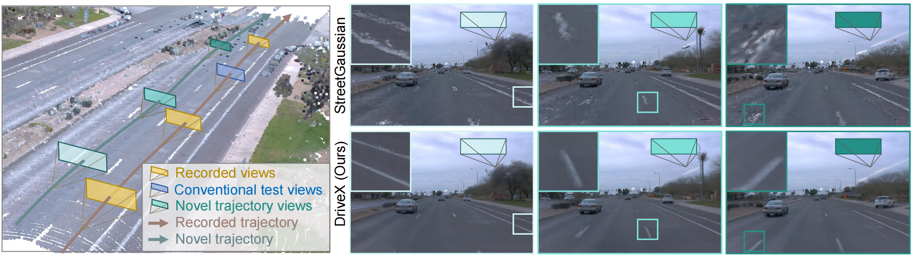

Abstract

Driving view synthesis along free-form trajectories is essential for realistic driving simulations, enabling closed-loop evaluation of end-to-end driving policies. Existing methods excel at view interpolation along recorded paths but struggle to generalize to novel trajectories due to limited viewpoints in driving videos. To tackle this challenge, we propose DriveX, a novel free-form driving view synthesis framework, that progressively distills generative prior into the 3D Gaussian model during its optimization. Within this framework, we utilize a video diffusion model to refine the degraded novel trajectory renderings from the in-training Gaussian model, while the restored videos in turn serve as additional supervision for optimizing the 3D Gaussian. Concretely, we craft an inpainting-based video restoration task, which can disentangle the identification of degraded regions from the generative capability of the diffusion model and remove the need of simulating specific degraded pattern in the training of the diffusion model. To further enhance the consistency and fidelity of generated contents, the pseudo ground truth is progressively updated with gradually improved novel trajectory rendering, allowing both components to co-adapt and reinforce each other while minimizing the disruption on the optimization. By tightly integrating 3D scene representation with generative prior, DriveX achieves high-quality view synthesis beyond recorded trajectories in real time—unlocking new possibilities for flexible and realistic driving simulations on free-form trajectories.